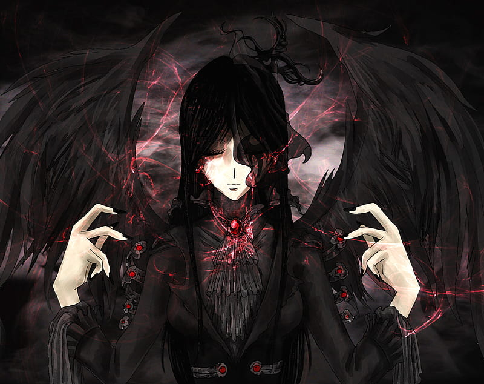
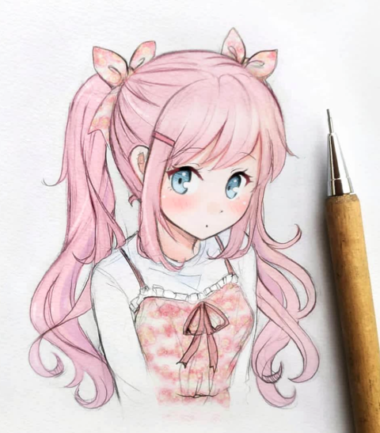

Dibujo hecho con 12 años
Descripción del post
Este dibujo lo hice cuando tenía 12 años y empezaba a dibujar
Descripción del post
Este dibujo lo hice cuando tenía 12 años y empezaba a dibujar
Descripción del post
Este dibujo fue largo y lavorioso, sombras y luces con contrastes complicados.
Orgullosa del acabado final
Descripción del post

Tras 2 horas dibujando conseguí realizar este dibujo. Cuando lo realicé tenía 10 años recien cumplidos.
Descripción del post
Tras 2 horas dibujando conseguí realizar este dibujo. Cuando lo realicé tenía 9 años recien cumplidos.
Descripción del post

llorando mientras dibujaba